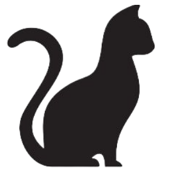

<app-header></app-header>
<div id="detalles" class="container-md mb-5">
    <div class="row justify-content-center mt-5 mb-2">
        <div class="col-8 order-2 order-md-1 col-md-4 col-lg-4 pt-3">
          <h1 class="titulo1 text-center mb-0 border-bottom border-secondary">
            {{gato.nombre}}
          </h1>
          <div class="rounded p-2">
            <h5 class="mb-3"><i class="bi bi-geo-alt-fill"></i>
              Ubicación: 
              <ng-container *ngIf="gato.transito">{{gato.transito.localidad}}</ng-container>
              <ng-container *ngIf="!gato.transito">{{gato.voluntario?.localidad}}</ng-container>
            </h5>
            <h5>Edad: {{gato.edad}}</h5>
            <h5>Sexo: {{gato.sexo}}</h5>
            <h5 class="d-flex align-items-center">Color: <input type="color" value="{{gato.color}}" disabled class="ms-1"></h5>
            <h5>Tipo de pelo: {{gato.tipoPelo}}</h5>
            <div *ngIf="!gato.padrino && gato.montoMensual" 
            class="d-flex flex-row align-items-center">
              <h5 *ngIf="!gato.adoptado"> Apadrinamiento:
                <button type="button" class="btn btn-secondary btn-sm mx-2 mb-2"
                (click)="apadrinar()" [ngClass]="{'disabled': gato.adoptado || gato.padrino}"> 
                <i class="bi bi-box2-heart"> </i> <span> </span>
                <i class="bi bi-currency-dollar"></i>{{gato.montoMensual}}
                </button>
              </h5>
            <h5 *ngIf="gato.adoptado && esVoluntario">Adoptado por
              <app-detalle-persona [persona]="adoptante"></app-detalle-persona>  
            </h5>
            </div>
            <div *ngIf="gato.ficha" class="my-3">
              <h4 class="border-bottom border-secondary">Ficha Veterinaria</h4>
              <h5>Antirrábica: 
                <ng-container *ngIf="gato.ficha.ultimaAntirrabica; else noPosee">
                 {{gato.ficha.ultimaAntirrabica | date:'dd-MM-yyyy'}}
                </ng-container>
              </h5>
              <h5>Desparasitación:
                <ng-container *ngIf="gato.ficha.ultimaDesparasitacion; else noPosee">
                  {{gato.ficha.ultimaDesparasitacion | date:'dd-MM-yyyy'}}
                </ng-container>
              </h5>
              <h5>Triple felina: 
                <ng-container *ngIf="gato.ficha.ultimaTripleFelina; else noPosee">
                  {{gato.ficha.ultimaTripleFelina | date:'dd-MM-yyyy'}} 
                </ng-container>
              </h5>
              <ng-template #noPosee>-</ng-template>
            </div>
          </div>
          <div class="row align-items-center justify-content-center">
            <div class="col pt-3 text-center">
                <button type="button" class="btn btn-secondary" id="adoptar"
                (click)="adoptar()" [ngClass]="{'disabled': gato.adoptado}">
                   Adoptar <i class="bi bi-suit-heart-fill"></i>
                </button>
            </div>
        </div>

        </div>
        <div class="col-10 order-1 order-md-2 col-md-6 col-lg-6 pt-3 pl-5 text-center position-relative">
          <div class="d-flex justify-content-center adopted-text position-absolute top-0 start-50 translate-middle" *ngIf="gato.adoptado">
            <span class="ml-2">Adoptado!</span> <i class="bi bi-house-heart-fill"></i>
          </div>
            <app-carousel [fotos]="gato.fotos" *ngIf="gato.fotos"></app-carousel>
            
    </div>
    </div>
    <div class="row align-items-center justify-content-center">
      <div class="col-12 col-md-10">
        <app-transitos-by-gato [id]="gato.id" *ngIf="esVoluntario || esPadrino"></app-transitos-by-gato>
      </div>
    </div>
</div>
<app-footer></app-footer>
